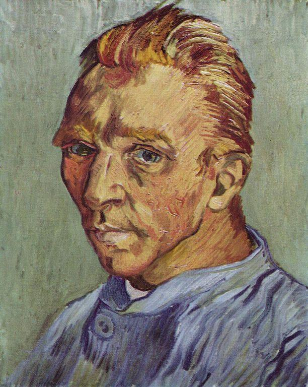

It is divided into four major periods by period:
1. The Baroque Period;
2. The Classical Period;
3. The Romantic Period;
4. Impressionism and Modernism.
By genre:
Symphony, Solo, Ensemble, Concerto, etc.
Johann Sebastian Bach (March 21, 1685 -- July 28, 1750) was a German composer of the Baroque period. He was one of the most important composers in the history of music, and is widely regarded as the "Father of Modern Western Music".
Wolfgang Amadeus Mozart (27 January 1756 -- 5 December 1791) was a European composer of classical music, born in Salzburg during the Holy Roman Empire.
Franz Joseph Haydn (March 31, 1732 - May 31, 1809), the founder of the Vienna classical pie, the father of the symphony.
Ludwig van Beethoven (on December 16, 1770 - March 26, 1827), was born in Bonn, Germany, to be one of the Vienna classical pie, European classicism period composer.
1. Matthew's Passion by Bach
2. The Marriage of Figaro by Mozart
3. Beethoven's Symphony of Destiny
4. Sonata in E Flat Major by Wagner
5. The Last Seven Words of Christ on the Cross by Haydn
6. "Lullaby" by Brahms
7. Serenade by Schubert
8. A Poet in Love by Schumann
9. The Messiah by Handel
10. Swan Lake by Tchaikovsky
Painting is generally divided into eastern painting and western painting two systems, from the kinds of painting to the points, it can be divided into Chinese painting, oil painting, printmaking, watercolor painting, gouache, sketch, etc.
What do Oriental painting and Western painting refer to?
Oriental paintings from ancient Egypt and developed eastern civilization with painting, such as China and the western painting is developed from ancient Greek and Roman in Europe as the center of the painting, this is the world's two big drawing system, the most important contributions to the civilization of painting has a direct performance ability, is an art of human is very easy to accept.
Michelangelo (1475-1564) Sculptor, architect, painter, and poet.He pursued the perfection of art all his life and insisted on his own artistic ideas.He died in Rome in 1564, and his style has influenced artists for almost three centuries.
Leonardo da Vinci (April 15, 1452 -- May 2, 1519) was perhaps more gifted than any other figure of his time, making him the quintessence of Renaissance humanism and one of the most famous painters of all time,Along with Michelangelo and Raphael, they are the Three Masters of the Renaissance.
Claude Monet (November 14, 1840 -- December 5, 1926) was a French painter and one of the founders of Impressionism.Monet was one of the most important French painters who popularized most of the theory and practice of Impressionism.Monet was good at experimental and expressive techniques of light and shadow.
Vincent Willem van Gogh (1853-1890) was a Dutch post-impressionist painter.He was a pioneer of expressionism and had a profound influence on 20th century art, particularly fauvism and expressionism.It now ranks among the world's most famous, widely known and expensive works of art.
"The World's Top Ten Famous Oil Paintings" has long been handed down from generation to generation
and has become famous as a hot classic masterpiece in the art world. They are
1.The Unknown Girl
2.The Sleeping Venus
3.Mona Lisa
4.The Sorceress
5.Meninas
6.The Portrait of Helena Furman
7.The Pearl Girl
8.The Boy with the Pipe
9.The Sunflowers
10.The Sistine Madonna
| Period | Trait | Time | Representative |
|---|---|---|---|
| The Baroque Period | Gorgeous and complex | 1600-1750 | Opera, concerto, sonata |
| The Classical Period | Simple and concise, rigorous and harmonious | 1750-1820 | Haydn, Mozart, Beethoven |
| The Romantic Period | Intense, free, unrestrained | 1820-1900 | Nocturnes, improvisations, ballads, scherzos, fantasias and lyricless songs |
| Impressionism and Modernism | Innovate | 1900-now | A Guide to Orchestral Music for Young People, Sinfonietta, Pauchinella, Petrojka |
| Period | Trait | Time | Representative |
|---|---|---|---|
| Middle Ages | Emphasize the expression of the spiritual world | 5th century AD to 15th century AD | In combination with religious architecture, sculpture, mosaics and murals also achieved some success |
| Renaissance | Adhere to the realistic method and reflect humanism thought | 14th century AD to 16th century AD | Leonardo da Vinci, Michelangelo and Raphael |
| Post-Renaissance era | The three centuries have different characteristics. | 17th century AD to 19th century AD | Rembrandt, Watteau, Boucher and Fragonard, Cezanne, Van Gogh and Gauguin |
| Mordern Paintings | The schools are repeated and varied | 19th-now | Ernst, Pollock, de Kooning, Kandinsky, Close, Pelstein |
1、I write for no other purpose than to add to the beauty that now belongs to me. (Jack London, American writer)
2、Art is the stored honey of the human soul, gathered on wings of misery and travel. (Theocore Dreser, American novelist)
3、A picture is a poem without words. (Horace, ancient Roman poet)
4、In music one must think with the heart and feel with the brains. Victor Hugo, French writer Jazz tickles your muscles, symphonies stretch your soul. (PaulWhiteman, American conductor)
5、Music is the only language in which you cannot say a mean or sarcastic thing. (John Erskine, American educator)
6、Any one who conducts an argument by appealing to authourity is not using his intelligence; he is just using his memory. (Da Vinci, Italian painter)
7、Art is a lie that tells the truth. (Picasso, Spanish painter)
8、Art is long, and time is fleeting. (Longfellow, American poet)
9、Art is much less important than life, but what a poor life without it !
10、Art is not a handicraft, it is the transmission of feeling theorist has experienced. (Len Tolstoy, Russian writer)
Beethoven in his father's harsh education spent his childhood, created his stubborn, sensitive and exciting character.At the age of 22, he settled in Vienna all his life and composed the Third Symphony from 1803 to 1804, which marked the mature stage of his composition.Over the next 20 years or so, his numerous works, with their strong artistic appeal and grandeur, pushed classical music to its peak and heralded the arrival of Romantic music in the 19th century.On March 26, 1827, Beethoven died in Vienna at the age of 57
Van Gogh was born on March 30, 1853, in the Dutch countryside of Zundert to a Protestant clerkship. In his early years, he worked as a clerk and trade broker, as well as a missionary in the mines, and finally turned to painting.His early painting style is realistic, influenced by Dutch traditional painting and French realism painting school.In 1886, he went to Paris, met the Impressionist and Neo-Impressionist painters, and came into contact with the works of the Japanese Ukiyo-e. The expansion of his vision changed his painting style greatly.In 1888, he came to Arles, a small town in the south of France, and created "Arles' Suspend Bridge".In the same year, he became involved with the painter Paul Gauguin, but because of the conflict of their personalities and differences of ideas, the cooperation soon failed.Van Gogh suffered from frequent bouts of madness (described by some as "epilepsy"), but he continued to paint when he was conscious.He wrote Starry Night in 1889.In July 1890, van Gogh shot himself in a delirium at the age of 37.
Benjamin Williams Leader (12 March 1831 solstice 22 March 1923) was an English landscape painter.In 1898, he became a member of the Royal College of Art in London, England.Leader's father was a dedicated amateur artist and a friend of John Constable, with whom Benjamin often accompanied him sketching on the banks of the River Severn.His brother Edward Reid Williams, who went on to become a distinguished civil engineer, was knighted for his work and is now chiefly remembered for designing the Manchester Ship Canal -- which later became the subject of Leader's largest painting.